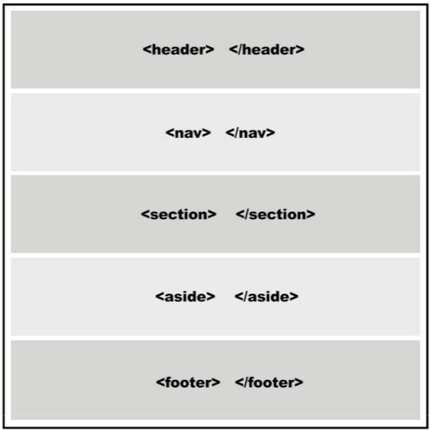
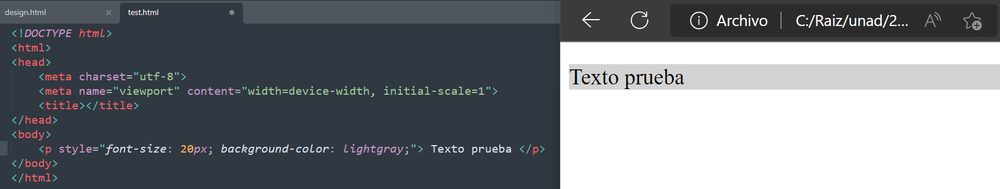
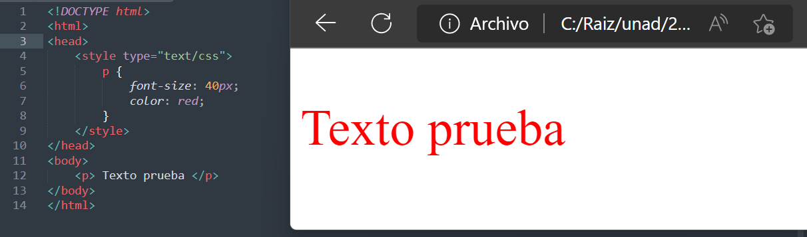
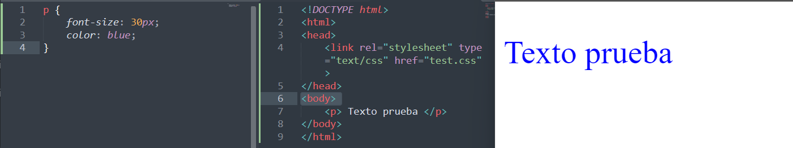

A pesar de que cada navegador garantiza estilos por defecto para cada uno de los elementos HTML, estos estilos no necesariamente satisfacen los requerimientos de cada diseñador. Normalmente se encuentran muy distanciados de lo que queremos para nuestros sitios webs. Diseñadores y desarrolladores a menudo deben aplicar sus propios estilos para obtener la organización y el efecto visual que realmente desean.
CSS es un lenguaje que trabaja junto con HTML para proveer estilos visuales a los elementos del documento, como tamaño, color, fondo, bordes, etc…
Estilos y estructura:
Con respecto a la estructura, básicamente cada navegador ordena los elementos por defecto de acuerdo con su tipo: block (bloque) o inline (en línea). Esta clasificación está asociada con la forma en que los elementos son mostrados en pantalla.
Elementos block son posicionados uno sobre otro hacia abajo en la página, (por ejemplo, section, nav, header, footer, div).
Elementos inline son posicionados lado a lado, uno al lado del otro en la misma línea, sin ningún salto de línea a menos que ya no haya más espacio horizontal para ubicarlos.

Modelos de caja:
Para aprender cómo podemos crear nuestra propia organización de los elementos en pantalla, debemos primero entender cómo los navegadores procesan el código HTML. Los navegadores consideran cada elemento HTML como una caja. Una página web es en realidad un grupo de cajas ordenadas siguiendo ciertas reglas. Estas reglas son establecidas por estilos provistos por los navegadores o por los diseñadores usando CSS.
Conceptos básicos sobre estilos

Estilos en línea: Una de las técnicas más simples para incorporar estilos CSS a un documento HTML es la de asignar los estilos dentro de las etiquetas por medio del atributo style.
Estilos embebidos: Una mejor alternativa es insertar los estilos en la cabecera del documento y luego usar referencias para afectar los elementos HTML correspondientes.


Archivos externos: Declarar los estilos en la cabecera del documento ahorra espacio y vuelve al código más consistente y actualizable, pero nos requiere hacer una copia de cada grupo de estilos en todos los documentos de nuestro sitio web. La solución es mover todos los estilos a un archivo externo y luego utilizar el elemento para insertar este archivo dentro de cada documento que los necesite. Este método nos permite cambiar los estilos por completo simplemente incluyendo un archivo diferente. También nos permite modificar o adaptar nuestros documentos a cada circunstancia o dispositivo, como veremos al final del libro.
Los archivos CSS son archivos de texto comunes. Al igual que los archivos HTML, puede crearlos utilizando cualquier editor de texto como el Bloc de Notas de Windows, por ejemplo.
Referencias: Es posible referenciar un elemento del HTML mediante: